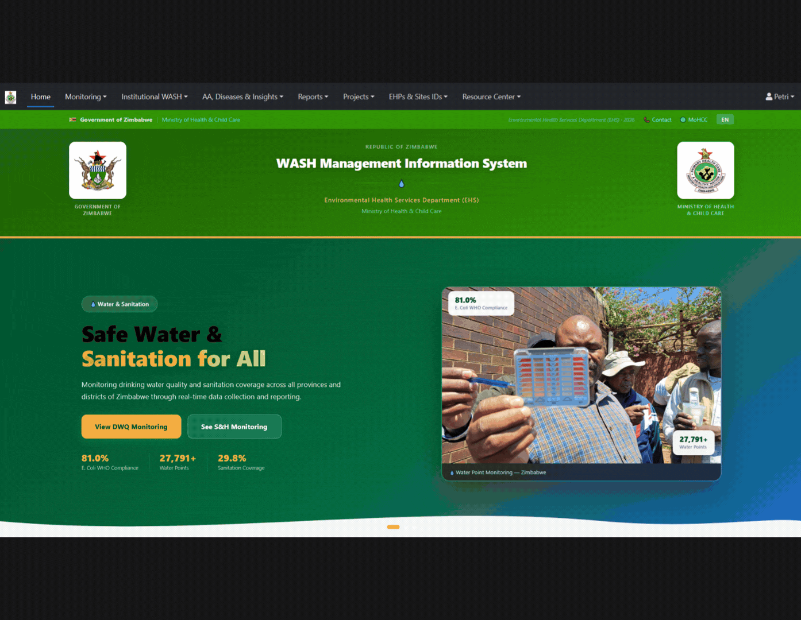
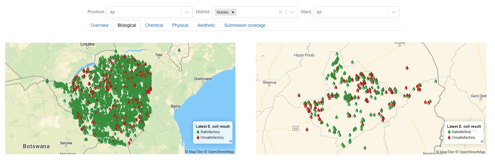
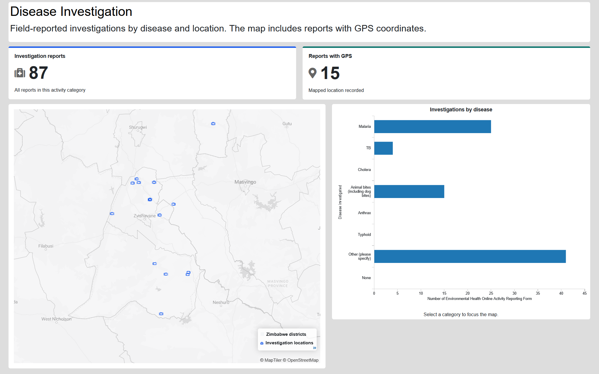
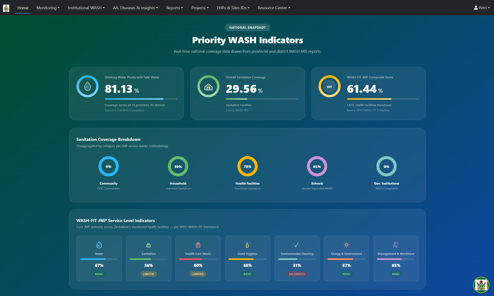

“The hardest part of any MIS is keeping it current as our needs change, and keeping control of it.”
For Milliton Chivasa, Manager of Water, Sanitation and Hygiene in Zimbabwe’s Ministry of Health and Child Care, that is the practical test of a national management information system (MIS). Can the people responsible for the work keep the system useful?
“With mWater, our team creates its own surveys, filters the data, and acts on it right away,” he says. “We do not have to request every change from someone else.”
The ministry’s Environmental Health Services Department runs its water, sanitation, and hygiene (WASH) MIS on mWater. It brings together information on drinking water safety, household and community sanitation, and WASH conditions in health facilities. The ministry came to us looking for a system its own team could run and manage. An in-kind contribution from mWater set up the ministry’s MIS portal implementation support from our team. The ministry keeps permanent access to the portal, and standard use of the mWater platform is free, so there are no ongoing access fees. The ministry covers its own costs of field data collection, staff time, and connectivity, and its team keeps surveys, users, and permissions up to date.

The MIS is public at zimbabwemohcc.mwater.co. District teams submit water point inspections and water quality test results as they visit locations. The system now holds about 28,000 water points, along with records for some 1,900 health facilities, 9,400 schools, and 22,000 sanitation facilities. Between January and September 2026, 210 ministry staff submitted about 4,700 water quality tests from 74 districts, with results arriving every month.
From data to action in Mutoko District
A management information system only earns its name when the information leads to management action. Routine samples collected in Mutoko District between January and May 2025 detected E. coli at 196 of the 217 water points tested. Most detections were at low levels (1–10 CFU per 100 mL), but together they pointed to a district-wide problem. Ministry staff spotted it during a national review of district results in the MIS.
The district team then investigated in the field and acted. Staff decontaminated affected water sources, gave households water treatment chemicals, ran health education sessions, and carried out engineering work to correct sources of pollution. Between July 2025 and July 2026, district staff retested 163 of the 196 contaminated points. Some points were tested more than once, giving 187 follow-up results and a markedly improved trend. Milliton says:
“Their rapid response helped mitigate the risk of waterborne disease outbreaks and averted a looming public health emergency.”

Health data alongside WASH data
The ministry’s Disease Trends console tracks WASH-related diseases such as cholera and typhoid, by month and health facility. To supply it, Milliton and Admire Masaga, a Public Health Specialist at the ministry, connected the MIS to DHIS2, the health information software used by many ministries of health. Using the mWater Integrator, they set up the integration in a few hours, matching DHIS2 health facility codes to the ministry’s master table. Health data now flow into mWater automatically each month, matching the update frequency of the source DHIS2 data. As a result, disease trends sit alongside the ministry’s WASH information.

In short, ministry staff change surveys and add data sources themselves, with mWater support for more complex tasks.
Access that matches the ministry’s structure
When the MIS launched nationally, anyone in the ministry’s organization could see data from every district. The ministry wanted each district team to work with its own data, so we set up access together to match how the ministry is organized. Today, district staff see their own district, and national staff still see the whole country.
The data belongs to the ministry, and the ministry decides who sees it. The portal front page is public, but that does not mean everything on it is. The ministry chooses what to publish and what to keep protected or private, and all data is encrypted in transit and at rest.
Ownership that extends across a team
Milliton leads the work, but he describes a team whose expertise extends beyond his own:
“I work closely with a team, and some of them understand mWater better than I do. If I retired today, the work would continue.”
This is still an early case, and long-term sustainability will depend on maintenance. Milliton’s advice:
“It is important to plan for maintenance from the start, and train people to do it. Then use the system across government, not only in one sector. When real-time reports come from one platform, they can become national standards.”
How to start government-led monitoring in mWater?
The ministry began building its MIS with an advantage. Its staff already used mWater, and data collectors used the platform’s training materials while development was underway. Another government can begin with its existing records and priority reporting needs, with implementation and support sized to that starting point. The pace of a national implementation depends on existing records, workflows, and staff experience, but having key government stakeholders taking initiative as is the case in Zimbabwe is of great importance. For implementation steps, training, costs, ownership, and security, see our guide to national water monitoring for governments.
Systematic national monitoring can help governments save money and protect lives. It shows sooner where water is unsafe, helps direct limited staff and budgets, and lets managers check that action followed. Mutoko shows the mechanism at work. A national MIS needs to serve today’s reporting requirements and give its users the means to respond to those arriving tomorrow.
If your government is planning a national MIS, contact us to discuss your existing systems and priority reporting needs. We can share implementation examples, sample terms of reference, and cost estimates from comparable programs.
